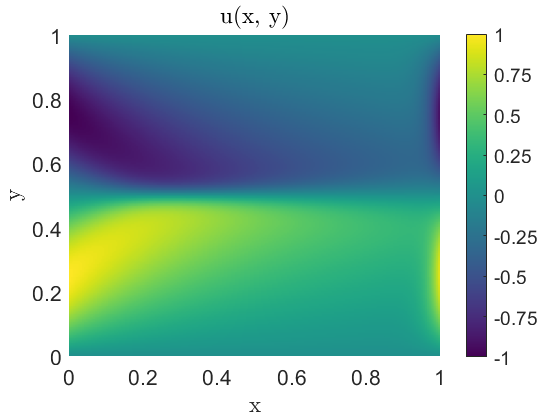
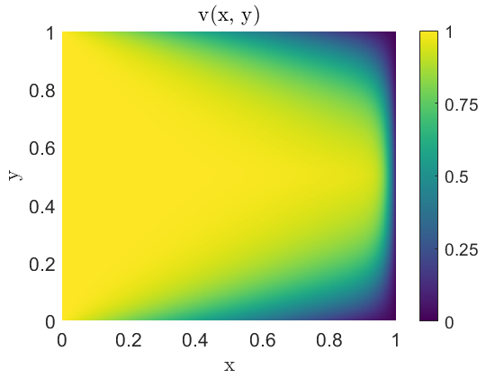

Contents
%{ @author: Benjamin Bemis Ph.D Student, Advisor: Dr Juliano Description: AME 60614: Numerical Methods Homework: 8 Due: 12/12/2024 %}
Preperation of the workspace
clear all clc close all fontsize = 16; % set(0,'DefaultFigureWindowStyle','default') set(0,'DefaultTextInterpreter','latex') set(0,'DefaultAxesFontSize',fontsize) set(0,'DefaultLegendFontSize',fontsize) colors = ["#000000","#1b9e77","#d95f02","#7570b3","#0099FF"]';
Setting data paths
Make sure to update this for the machine that you are working on. (Maybe, This should now run on any machine without change. 7/24/24) Change the current folder to the folder of this m-file.
if(~isdeployed) cd(fileparts(matlab.desktop.editor.getActiveFilename)); end addpath(cd) % cd ..; % Moving up a directory (from processing_code) basepath = cd; % Pulling the current directory imagepath = [basepath filesep 'images' filesep]; mkdir(imagepath);
Warning: Directory already exists.
Chapter 10 Problem 5
% Parameters nu = 0.015; N = 200; % Number of grid points L = 1; % Domain length h = L / (N - 1); % Grid spacing dt = 0.0001; % Time step tolerance = 1e-6; % Steady state tolerance maxIter = 1e5; % Maximum iterations x = linspace(0, L, N); y = linspace(0, L, N); [X, Y] = meshgrid(x, y); u = zeros(N, N); v = zeros(N, N); % Boundary conditions u(:, 1) = sin(2 * pi * x); % u(x, 0) u(:, end) = sin(2 * pi * x); % u(x, 1) v(1, :) = 1 - y; % v(0, y) v(end, :) = 1 - y; % v(1, y) % Time-stepping for iter = 1:maxIter u_old = u; v_old = v; % u for i = 2:N-1 for j = 2:N-1 u(i, j) = u_old(i, j) - dt * ( ... u_old(i, j) * (u_old(i+1, j) - u_old(i-1, j)) / (2 * h) + ... v_old(i, j) * (u_old(i, j+1) - u_old(i, j-1)) / (2 * h) ) ... + nu * dt * ( ... (u_old(i+1, j) - 2*u_old(i, j) + u_old(i-1, j)) / h^2 + ... (u_old(i, j+1) - 2*u_old(i, j) + u_old(i, j-1)) / h^2); end end % v for i = 2:N-1 for j = 2:N-1 v(i, j) = v_old(i, j) - dt * ( ... u_old(i, j) * (v_old(i+1, j) - v_old(i-1, j)) / (2 * h) + ... v_old(i, j) * (v_old(i, j+1) - v_old(i, j-1)) / (2 * h) ) ... + nu * dt * ( ... (v_old(i+1, j) - 2*v_old(i, j) + v_old(i-1, j)) / h^2 + ... (v_old(i, j+1) - 2*v_old(i, j) + v_old(i, j-1)) / h^2); end end % Boundary conditions u(:, 1) = sin(2 * pi * x); % u(x, 0) u(:, end) = sin(2 * pi * x); % u(x, 1) v(1, :) = 1 - y; % v(0, y) v(end, :) = 1 - y; % v(1, y) v(:, 1) = 1; % v(x, 0) v(:, end) = 0; % v(x, 1) % Convergence if max(max(abs(u - u_old))) < tolerance && max(max(abs(v - v_old))) < tolerance disp(['Converged in ', num2str(iter), ' iterations.']); break; end end figure; f = pcolor(X, Y, u) set(f, 'edgecolor','none') title('u(x, y)') xlabel('x'); ylabel('y'); zlabel('u'); colormap viridis a = colorbar set(a,'YTick',-1:.25:1) set(gca, 'CLim', [-1 1]) print(gcf,[imagepath,'u.png'],'-dpng'); figure f = pcolor(X, Y, v) set(f, 'edgecolor','none') title('v(x, y)') xlabel('x'); ylabel('y'); zlabel('v'); colormap viridis a = colorbar set(a,'YTick',0:.25:1) set(gca, 'CLim', [0 1]) print(gcf,[imagepath,'v.png'],'-dpng');
Converged in 26021 iterations.
f =
Surface with properties:
EdgeColor: [0 0 0]
LineStyle: '-'
FaceColor: 'flat'
FaceLighting: 'flat'
FaceAlpha: 1
XData: [200×200 double]
YData: [200×200 double]
ZData: [200×200 double]
CData: [200×200 double]
Use GET to show all properties
a =
ColorBar with properties:
Location: 'eastoutside'
Limits: [-1.0000 1.0000]
FontSize: 14.4000
Position: [0.8315 0.1500 0.0381 0.7690]
Units: 'normalized'
Use GET to show all properties
f =
Surface with properties:
EdgeColor: [0 0 0]
LineStyle: '-'
FaceColor: 'flat'
FaceLighting: 'flat'
FaceAlpha: 1
XData: [200×200 double]
YData: [200×200 double]
ZData: [200×200 double]
CData: [200×200 double]
Use GET to show all properties
a =
ColorBar with properties:
Location: 'eastoutside'
Limits: [0 1]
FontSize: 14.4000
Position: [0.8315 0.1500 0.0381 0.7690]
Units: 'normalized'
Use GET to show all properties
 